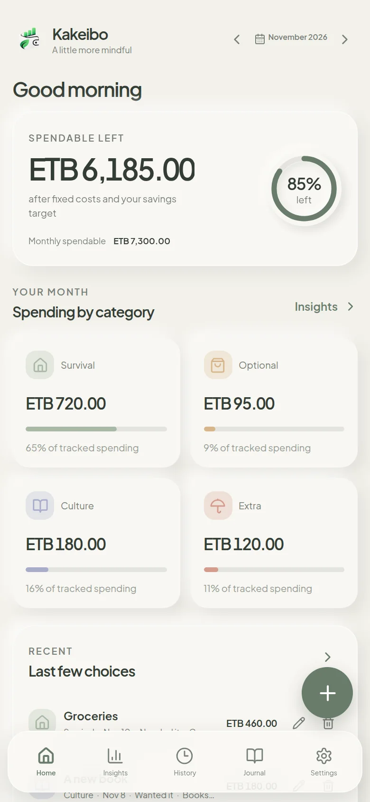
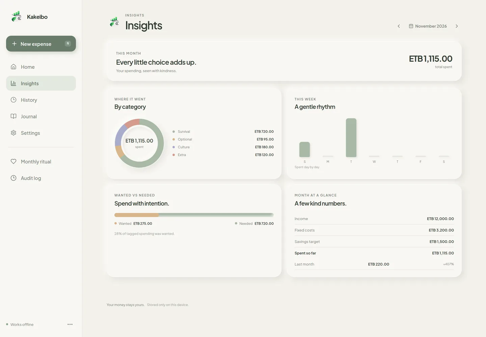
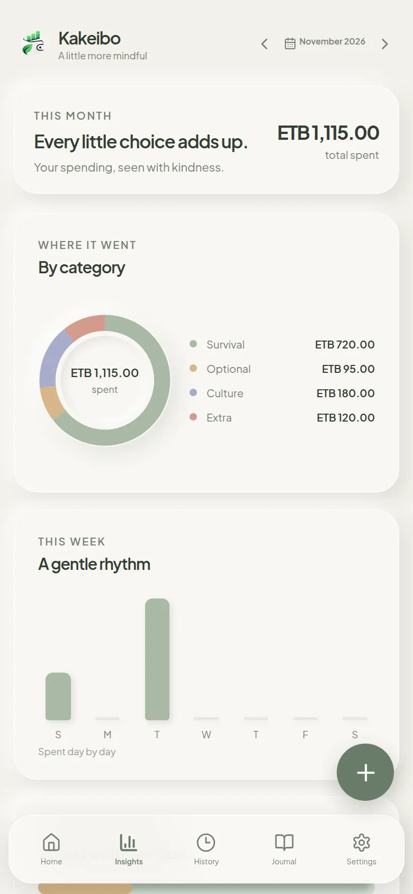

Survival
Essential everyday expenses and necessities.
the things you needKakeibo · 家計簿 · a household ledger
Plan gently. Notice your choices. Reflect without judgement. A quiet place to understand where your money goes and what matters most.

a little attention, once a month.
A philosophy that has lasted
Before budgeting became another thing to optimize, there was a simple practice: write things down, look at what happened, and decide what matters next.
Kakeibo (家計簿) means “household account book”. It was popularized in Japan by the journalist Hani Motoko in 1904.
Read the full story →The four categories
Essential everyday expenses and necessities.
the things you needNon-essential purchases and discretionary spending.
Books, learning, entertainment and experiences that enrich everyday life.
what feeds youUnexpected expenses and occasional costs.
These are flexible lenses, not moral labels. Rename them, and adapt them to your own circumstances.
The monthly practice
Record income, fixed costs and an optional savings target.
Record everyday expenses and notice the decisions behind them.
Look at the month’s totals and see where spending gathered.
Decide what to continue, change or explore next month.
Inside Kakeibo
A calm home for the month’s numbers, with a journal for the things a total cannot tell you.


Screenshots show demo data.
Private by default
No account. No cloud dependency. Your records live on your device, and optional sync stays on your local network.
Reflection
Not every month goes according to plan. That is not a failure. It is information you can use to make the next month a little clearer.
Get Kakeibo
Bring the practice into everyday life. Keep your records close, return to your numbers when you need to, and make the experience your own.
Direct APK · 8.2 MB · version 1.0.1
AppImage · 94.4 MB · version 1.0.2
Debian package · 94.6 MB · version 1.0.2
Installer · 99.9 MB · version 1.0.0
Disk image · not published yet
No install · opens in your browser
Every published build has a checksum. The SHA256SUMS manifest lists a SHA-256 fingerprint for each downloadable file — the Android APK, the Windows installer, the Linux AppImage and the Debian package. Compare it after downloading with the steps under How to install; the macOS build joins the manifest when it is published. See all downloads and checksums →
Version 1.0.2 · Native builds for Android, Linux, Windows and macOS · Web app everywhere else.